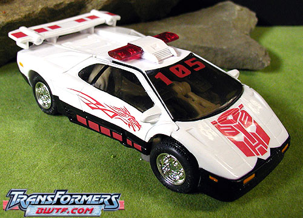
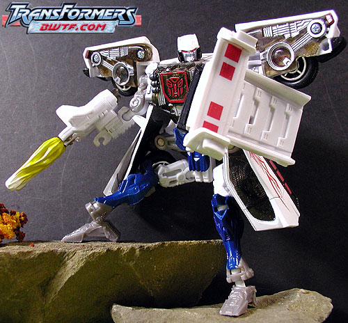
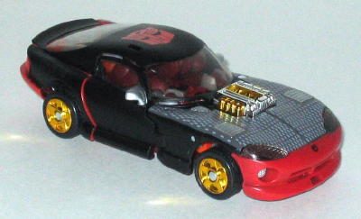
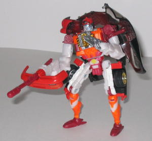

Prowl
(Deluxe) and Sideburn [Universe; Wal-Mart Exclusives)
Prowl
(Deluxe) and Sideburn [Universe; Wal-Mart Exclusives)
(NOTE: Since I don't have much to say about
each of these toys individually, I've decided to review them both on one
page.)
Prowl


Allegiance
: Autobot
Size
: Deluxe
Difficulty of Transformation
: Hard
Color Scheme
: White, black, tinted
clear plastic, red, gray, dark blue, light orange, and some chrome red,
chrome silver, yellow, bluish silver, and translucent red
Rating
: 8.2
(NOTE: Because this is a repaint, this is
not a full-blown review. This mainly covers any changes made to the mold
and the color scheme, and merely compares it to RiD Prowl. For a review
on the mold itself, read the review of RiD Prowl
here
.)
I don't even know if
I'd call this version of Prowl a repaint, really. It's just so obviously
overstock with a few new paint apps. These new paint apps are good for
the most part, don't get me wrong- the red dots on the bottom of the doors
and on the fins break up the monotony of the vehicle mode a little, and
the dragon deco on the doors looks pretty darn cool, too. I'm not sure
what the number "105" is doing on his hood, though- maybe it stands for
how many times this mold has been repainted, who knows. :p The HUGE
Autobot symbol on the hood looks ridiculous, though. Prowl might has well
have spray-painted on him "SHOOT HERE". As for the rest of Prowl, it's
EXACTLY the same as the original version of RiD Prowl. It's just such a
lazy repaint, it's really more of a variant.
No mold changes have
been made to Universe Prowl. Comes with a "Universe" promotion CD.
Universe Prowl isn't
bad, per se- he's just a crummy and extremely lazy repaint. I'd recommend
Universe Inferno's
paint job over this guy's
any day. Not recommended, even for completists.
No Stats
Side
Burn


Allegiance
: Autobot
Size
: Deluxe
Difficulty of Transformation
: Very
Hard
Color Scheme
: Red, dark dull red,
off-white, light orange, transparent tinted plastic, chrome gold, flat
black, and some chrome silver, gray, white, silver, and metallic blue
Rating
: 7.7
(NOTE: Because this is a repaint, this is
not a full-blown review. This mainly covers any changes made to the mold
and the color scheme, and merely compares it to the original RiD Side Burn.
For a review on the mold itself, read the review of the original RiD Side
Burn
here
.)
Side Burn fares slightly
better than Universe Prowl with his paint scheme, but it's still a very
lazy repaint. What Hasbro basically did was coat Side Burn's alternate
mode in black paint, but gray dots on it to simulate a "snake skin" hood,
and slap another honkin' huge Autobot symbol on his roof. What's extremely
odd about his alternate mode, though- and even more proof that the guy
who came up with this scheme just didn't care- is that the front and rear
bumpers are still red, compltely clashing with the black since there's
no reason for these fragmented spots of a different color. His robot mode,
ignoring the car bits, looks the same as his "Powered-up" RiD redeco.
No mold changes have
been made to Universe Side Burn. Comes with a "Universe" promotion CD.
Universe Side Burn just
looks so half-way done that it's not even funny. Especially since the rather
coarse black paint has a tendency to come off, many people have reported.
(Although none on mine has.) He looks different enough in the package,
but don't be fooled- he's still an extremely lazy repaint, and not worth
picking up, even for the Universe CD.
No Stats
Reviews by Beastbot
Back to Transformers:
Universe Index